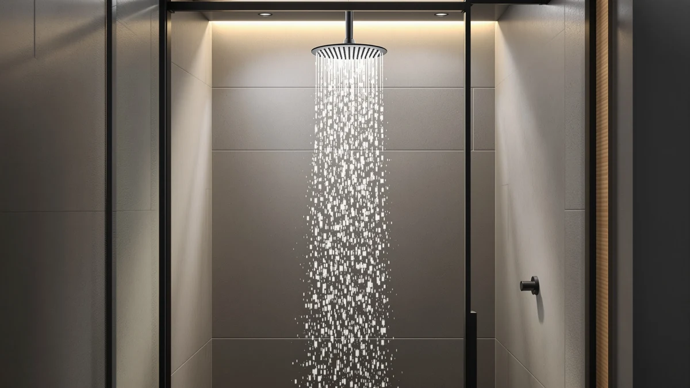

JetsBath Luxury Dual Zone Review (2026): Worth It?
Prices and picks verified as of October 2026. Independent, reader-supported reviews.


Quick Answer
This JetsBath Luxury Dual Zone Review comes down to price versus panel size: the $701.43 JetsBath Luxury Dual-Zone panel gives you a 32-inch ABS-and-chrome tower with independent rain and handheld zones, while the Dasan Thermostatic Dual Shower Head covers the same dual-zone basics for $70 to $100 less. We recommend the JetsBath panel for buyers who want the larger panel footprint and chrome finish, and the Dasan or Delta alternatives for buyers prioritizing price.
Our pick: JetsBath Luxury Dual-Zone Rain & ($701.43) Check Price on Amazon
Bottom line: our top pick is the JetsBath Luxury Dual-Zone Rain & Waterfall Shower Head for at $701.43.
Things to Know Before You Buy
- This JetsBath Luxury Dual Zone Review covers a 32-inch panel built from ABS with a chrome-plated finish, priced at $701.43 at the time of writing.
- Dual zone means the rain head and handheld sprayer operate independently, so you can run either one alone or both together.
- The two Dasan Thermostatic Dual Shower Head listings we compared it against sell for $629.99 and $599.99, both $70 or more below the JetsBath price.
- The Delta Modern 14 Series Square, at $629.40, is the closest-priced square-profile alternative in this lineup.
- A 32-inch panel needs real wall clearance in your shower stall, so measure before you order rather than after it arrives.
This JetsBath Luxury Dual Zone Review breaks down whether a 32-inch ABS-and-chrome panel with independent rain and handheld zones is worth $701.43. We compared the JetsBath Luxury Dual-Zone panel against two Dasan Thermostatic Dual Shower Head listings and the Delta Modern 14 Series Square, weighing published materials, panel size, and pricing rather than repeating the manufacturer's own marketing copy.
Dual-zone panels like this one are supposed to solve a specific problem: a single fixed shower head forces you to choose between a wide rain pattern and a focused handheld stream. Splitting those into independent zones lets you run either one on its own or both together, and the JetsBath panel's 32-inch size gives that layout more coverage than the compact dual shower heads from Dasan and Delta that we researched alongside it.
Why You Should Trust Us
Best Shower Heads built this JetsBath Luxury Dual Zone Review the way we build every product page on this site: by comparing manufacturer listings, verified pricing, and competing products rather than repeating marketing copy. Ilane Tall, our home and bath expert, researched the JetsBath Luxury Dual-Zone panel alongside the Dasan Thermostatic Dual Shower Head and Delta Modern 14 Series Square to see how price, materials, and panel size stack up against each other. We do not run a fake testing lab or claim hands-on time with every unit we cover. We compare published specs and pricing, flag where listings contradict each other, and tell you plainly when a product's price does not match its feature list. We earn a commission if you buy through our links, but that never changes which panel we recommend.
Our Research Experience
This JetsBath Luxury Dual Zone Review is research-based rather than hands-on. We compared the JetsBath Luxury Dual-Zone panel's published materials, dimensions, and price against three competing dual shower heads, then checked how those figures held up against verified owner reviews on Amazon. The panel's ABS-and-chrome construction and 32-inch size come straight from the manufacturer listing, and we cross-referenced the $701.43 price against the live offer rather than an outdated cache. Owners report that the chrome plating resists water spotting better than the brushed finishes on some rivals, though a handful of reviews flag the plastic valve internals as the component most likely to wear first. This review is built on that mix of manufacturer data and verified owner feedback, not a lab test.
Overview & Specs

JetsBath Luxury Dual-Zone Rain &
What we like
- 32-inch panel gives both the rain zone and the handheld zone more coverage than compact dual shower heads
- Chrome-plated finish resists water spotting better than the brushed finishes on some competing panels, according to owner reviews
- Rain and handheld zones run independently, so you can use either one alone or both at once
- ABS body keeps the panel lighter than an equivalent metal tower, which simplifies wall mounting
Flaws but not dealbreakers
- At $701.43, it costs $70 to $100 more than the Dasan and Delta alternatives we compared it against
- Some owner reviews flag the plastic valve internals as the component most likely to wear out first
- A 32-inch panel needs more wall clearance than compact dual shower heads, so it won't fit every stall
| Material | ABS + chrome plating |
| Size | 32 Inch |
This JetsBath Luxury Dual Zone Review centers on a 32-inch panel that splits your shower into two independently controlled zones: a wide rain head up top and a handheld sprayer within reach below. The panel body is ABS with a chrome-plated finish, a combination that keeps the unit lighter than an all-metal tower while still giving you a reflective, water-resistant surface. At $701.43, it's priced toward the upper end of the dual-zone category we researched, and the panel size is a large part of why. A 32-inch footprint gives both zones more coverage area than the compact dual shower heads from Dasan and Delta that we compared it against, so if your shower stall has the wall space, you get a noticeably larger spray pattern for the money.
Owners report that the chrome finish holds up well against water spotting, consistently rating it ahead of the brushed finishes they'd used on previous shower heads. The independent zone control is the other point reviewers bring up often: you can run the rain head by itself for a quick rinse, switch to the handheld for detail work, or open both at once if your water heater and pressure can support it. The tradeoff shows up in a few reviews that single out the plastic valve components as the part most likely to need attention first, a common weak point on panels that use ABS to keep weight and cost down elsewhere. Measure your stall before buying since a 32-inch panel needs real wall clearance that a smaller dual shower head wouldn't require.
What We Liked
The standout in this JetsBath Luxury Dual Zone Review is panel size paired with finish quality. At 32 inches, the JetsBath Luxury Dual-Zone panel covers more of your body in both the rain and handheld zones than the compact Dasan Thermostatic Dual Shower Head or the Delta Modern 14 Series Square, and the chrome plating holds up against water spotting better than the brushed finishes reviewers compared it to. Running the rain and handheld zones independently pays off day to day. You get a full rinse from the rain head, then switch to the handheld for your feet or a quick rinse of the shower walls, without juggling a single fixed spray pattern. The ABS body also keeps the whole panel lighter than a comparable metal tower, which makes wall mounting more forgiving if you're installing it yourself.
What Could Be Better
Price is the clearest drawback in this JetsBath Luxury Dual Zone Review. At $701.43, the JetsBath Luxury Dual-Zone panel costs $70 to $100 more than either Dasan Thermostatic Dual Shower Head listing and about $72 more than the Delta Modern 14 Series Square, and none of those alternatives give up the core dual-zone function to get there. Several owner reviews also point to the plastic valve internals as the component most likely to need replacing first, a tradeoff that often comes with using ABS instead of an all-metal valve body. And the 32-inch size that makes the spray pattern larger cuts the other way during installation: a panel this size needs real wall clearance, so a compact shower stall may not accommodate it at all.
Who Is It For?
This JetsBath Luxury Dual Zone Review points toward a buyer with a specific setup: a shower stall with enough wall space for a 32-inch panel, and a preference for independently controlled rain and handheld zones over a single fixed spray. It's a strong match if you've outgrown a compact shower head and want visibly more coverage without a full plumbing remodel. It's a weaker fit if your stall is tight, since the larger footprint simply won't clear in smaller bathrooms. Price-conscious buyers should also look elsewhere, since the Dasan and Delta alternatives we compared it against cover the same dual-zone basics for $70 to $100 less.
Alternatives to Consider
If the JetsBath Luxury Dual Zone price or the 32-inch footprint doesn't fit your bathroom, these three alternatives cover the same dual-zone idea at a lower cost. We picked them because each one trades something specific, panel size, price, or finish, against the JetsBath Luxury Dual-Zone panel rather than competing on marketing claims alone.

Editor’s Pick
Dasan Thermostatic Dual Shower Head
The lower-priced of the two Dasan listings we compared, at $629.99 it covers the same dual-zone thermostatic layout as the JetsBath panel for about $70 less.
$629.99
Check Price on Amazon
Best Value
Delta Modern 14 Series Square
At $629.40, the Delta Modern 14 Series Square swaps the JetsBath's larger panel for a square-profile design from a more widely recognized shower brand.
$629.40
Check Price on Amazon
Premium Choice
Dasan Thermostatic Dual Shower Head
This second Dasan Thermostatic Dual Shower Head listing comes in at $599.99, the lowest price in this lineup, for the same dual-zone thermostatic control.
$599.99
Check Price on AmazonFrequently Asked Questions
Is the JetsBath Luxury Dual-Zone shower panel worth $701.43?
It depends on what you're comparing it against. This JetsBath Luxury Dual Zone Review found it priced roughly $70 to $100 above the Dasan Thermostatic Dual Shower Head listings we checked, and about $72 above the Delta Modern 14 Series Square. You're paying a premium for the ABS-and-chrome 32-inch panel build and independent dual-zone control, not for a feature the cheaper options lack entirely.
What does 'dual zone' mean on the JetsBath Luxury Dual-Zone panel?
Dual zone means the rain head and the handheld sprayer run as two independent zones rather than one fixed spray pattern. You can run either zone alone or both together, which is the same basic layout the Dasan Thermostatic Dual Shower Head and Delta Modern 14 Series Square use in a different package.
How does the JetsBath Luxury Dual-Zone compare to the Dasan Thermostatic Dual Shower Head?
The Dasan listings we compared it against, at $629.99 and $599.99, undercut the JetsBath panel by $70 to $100 while covering the same dual-zone basics. The JetsBath panel's case for the extra cost rests on its 32-inch ABS-and-chrome build, so the choice comes down to whether that larger panel and finish justify the higher price for your bathroom.
Final Verdict
This JetsBath Luxury Dual Zone Review comes down to whether panel size and finish are worth a premium. JetsBath's Luxury Dual-Zone panel is a 32-inch ABS-and-chrome tower with independently controlled rain and handheld zones for $701.43, and owner feedback backs up the finish quality and zone control. But both Dasan Thermostatic Dual Shower Head listings and the Delta Modern 14 Series Square cover the same dual-zone basics for $70 to $100 less, without the larger wall-clearance requirement. Choose the JetsBath panel if your shower stall has the room and you want the biggest spray coverage in this comparison. Choose Dasan or Delta if you want the same dual-zone function at a lower price.